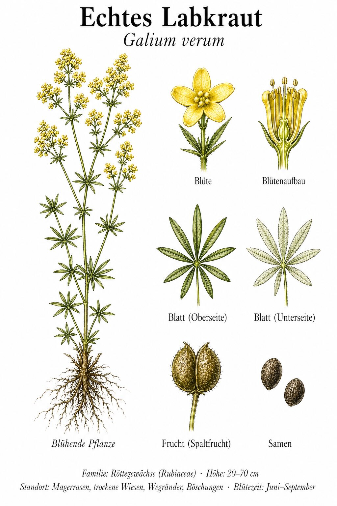
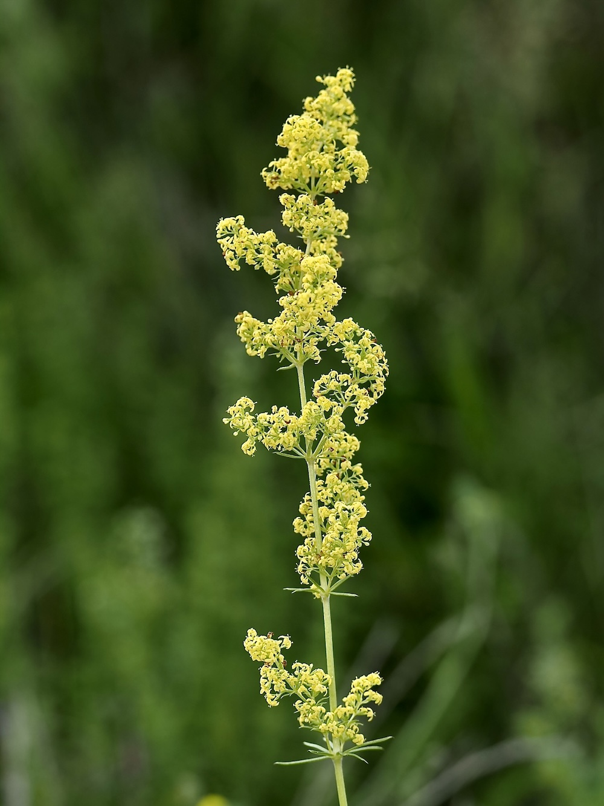

Honig-süßer Heuduft aus winzigen gelben Sternen — der König der Magerwiesen.


Pflanze und Käse
Das Labkraut ist nicht nur dekorativ — sein Name verrät seine Geschichte. Das Kraut enthält Stoffe, die Milch zum Gerinnen bringen, ähnlich wie das Lab in einer Käserei. Tatsächlich wurde es jahrhundertelang in der Käseherstellung verwendet, vor allem für den berühmten Chester-Käse. Heute kommt das Lab industriell aus Kälbermägen — aber das pflanzliche Labkraut könnte ein Comeback feiern.
Heuduft aus den Bergen
Beim Trocknen entwickelt das Labkraut einen unverwechselbaren süßen Heuduft (Cumarin) — den klassischen „Bergwiesen-Geruch“ der alpinen Heuböden. Genau dieser Geruch wurde in Trachtenkleidern als Mottenschutz und Aroma verwendet. Wer schon mal frisches Bergheu gerochen hat, weiß, wie himmlisch das wirken kann.
Wissenswertes & Merksätze
Erkennen leicht gemacht
Schlanker, vierkantiger Stängel. Schmale, nadelartige Blätter zu 8–12 in Quirlen am Stängel — als wären sie auf einem Stiel aufgespießt. Blütenstände dichte Rispen aus winzigen leuchtend gelben Vier-Blütchen. Verströmt im Trocknen Heuduft.
Magerrasen-Indikator
G. verum braucht trockene, nährstoffarme Böden. Wo es noch wächst, hat man einen wertvollen Magerrasen vor sich — Lebensraum für viele bedrohte Schmetterlinge und Wildbienen.